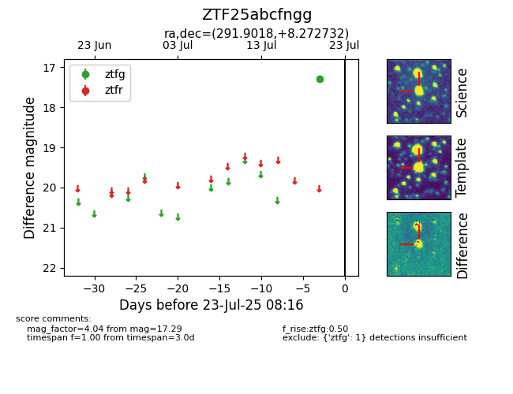

Target ZTF25abcfngg at 2025-07-23 12:37, see:
FINK: fink-portal.org/ZTF25abcfngg
Lasair: lasair-ztf.lsst.ac.uk/objects/ZTF25abcfngg
ALeRCE: alerce.online/object/ZTF25abcfngg
alt names
ZTF25abcfngg (ztf,fink)
coordinates:
equatorial (ra, dec) = (291.9018,+8.27273)
galactic (l, b) = (44.4399,-4.17539)
photometry
last atlaso=17.62, ztfg=17.29
1 atlaso, 1 ztfg detections
